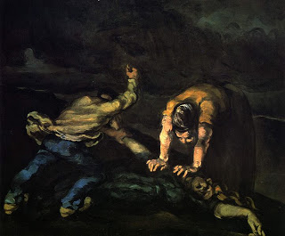

Sanhedrin 73 - Preventing a Criminal at the Cost of his Life
The following may be prevented from sinning at the cost of their lives, that is, they may be killed in order to prevent them from committing the transgression: one who pursues a fellow to kill him, and one who runs after a male to sodomize him, or after a betrothed maiden to violate her.
However, the following may not be killed: one who pursues a beast for the purpose of sodomy, one who is about to desecrate the Sabbath, or one who is about to engage in idol worship.
Art: Paul Cézanne - Murder